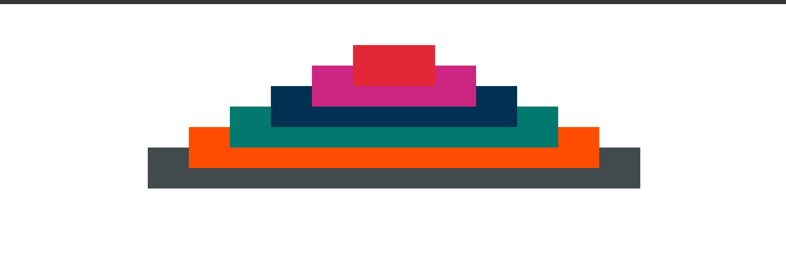
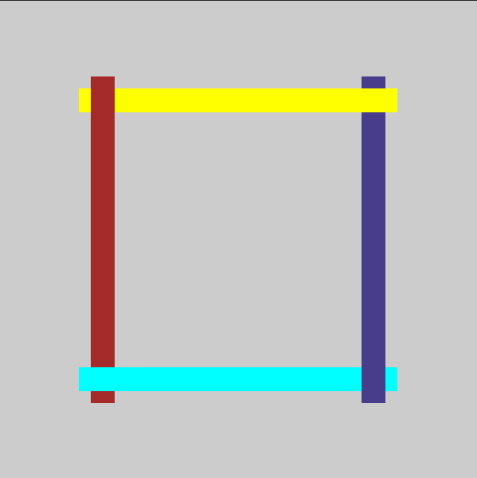

----> Solution -- Home work - 05/08/2021 - Level 4
----> Solution -- Home work -05/08/2021 - Level 5
Домашка на 5.07.21
С 2.07.21 во всех домашках должен быть подключен нормалайз и main.css
Обязательно к выполнению:
- 1 уровень: Доделать круги которые были на занятии.
- 2 уровень: Делаем пирамиду которая находиться посередине страницы, этот общий блок выравниваем по середине с помощью margin: 0 auto;
- 3 уровень: При наведении на каждую ступеньку пирамиды, она меняет цвет.
- Доп. задание для желающих:
4 уровень: сделать так чтобы цвета менялись плавно за 2-3, а не резко.
- 5 уровень: сверстать по картинке, 4 палки перекрывают друг друга ( использовать только позиционирование и z-index.

